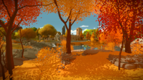
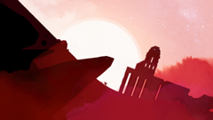
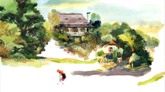
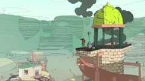
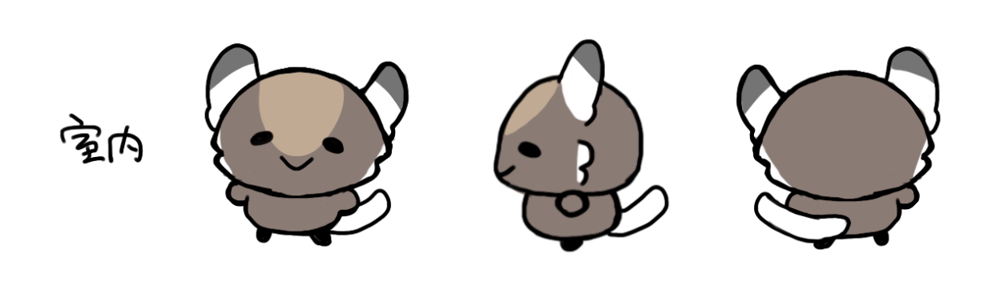
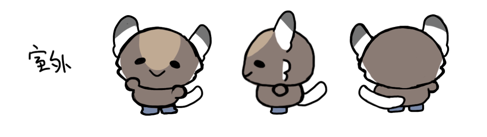

Issue 12 · run issue12-preflight-001
Experiment evidence
Review boundaryNo automatic quality score or redraw. The planned locator center and deterministic aperture are not final click truth.
Prepared assets

#E42 style asset
assets/styles/E42.png
fa49f9353548b43d2744fef58198684861b700c28bfeadbf2e94a1a6d2ecba61240 × 135

#E3 style asset
assets/styles/E3.png
92623ba0932971b17a9040631cb97edce167032b2498ce35ab71555f85784bec240 × 135

#E12 style asset
assets/styles/E12.png
fa96da92a927d558f801dff8d261488b5a0d60afe425eb4b47c1e584ad595749240 × 135

#E15 style asset
assets/styles/E15.png
ed01060a7ba5bf34051cab024d0655880e2a596858dc6483e1f10bef6a7a7001240 × 135

#top character top
assets/character/chongwu-top.png
5f2629f1e3033bf5305ee4a03a0ffaeeb1548875952b113334878701b033da8d1248 × 352

#bottom character bottom
assets/character/chongwu-bottom.png
51ac32a5caf1f07477639591935d7db93f2d869a1ed647478b6027e96da2042b1248 × 353
Snapshot: 4e8c199e6757bfdbdc48a05bac95b32f6001f2e9b203cc263b857270b3262f3a
Five prompt layers
- fixed_boundaries
- 生成16:9横版纯环境母图，手绘2D、自然克制、非摄影。固定镜头和单一主光方向；不含宠物、人物、宠物局部、剪影、雕塑、玩偶、壁画、黑圈、UI、文字、Logo或水印；不得复刻参考作品的具体角色、建筑、道具或剧情。
- destination_requirement
- 前景是柔和起伏的金绿色草坡和一条 S 形土路，中景是山脊上的一棵孤树和低矮灌木，后景是灰蓝远山、薄雾和安静天空。保留孤树和土路两个地标。
- style_description
- 参考《Dordogne》的画风语言，强调轻薄水彩、纸面渗色、手账式记录感、温暖日光色调与记忆滤镜般的柔软氛围，整体像私人绘本笔记，突出水彩边界与情绪残影，而不是具体纪念品或生活杂物。
- composition_prompt
- 参考《魔戒：护戒使者》的旅途镜头组织，横版 16:9，小场景中景，以 S 型道路、河道或栈道串联前景到远景焦点，路径必须清楚可读，角色活动区落在中段，避免路线被障碍切断或弯折过碎。
- current_anchor_action
- 预留两个空间分离、可站立、避开边缘和主地标的视觉锚点：孤树下方道路侧平地；前景 S 形道路宽缓弯道。不输入宠物参考图；按场景语义预留两个小尺寸宠物可活动区域。
Rendered prompt
[1] 生成16:9横版纯环境母图，手绘2D、自然克制、非摄影。固定镜头和单一主光方向；不含宠物、人物、宠物局部、剪影、雕塑、玩偶、壁画、黑圈、UI、文字、Logo或水印；不得复刻参考作品的具体角色、建筑、道具或剧情。
[2] 前景是柔和起伏的金绿色草坡和一条 S 形土路，中景是山脊上的一棵孤树和低矮灌木，后景是灰蓝远山、薄雾和安静天空。保留孤树和土路两个地标。
[3] 参考《Dordogne》的画风语言，强调轻薄水彩、纸面渗色、手账式记录感、温暖日光色调与记忆滤镜般的柔软氛围，整体像私人绘本笔记，突出水彩边界与情绪残影，而不是具体纪念品或生活杂物。
[4] 参考《魔戒：护戒使者》的旅途镜头组织，横版 16:9，小场景中景，以 S 型道路、河道或栈道串联前景到远景焦点，路径必须清楚可读，角色活动区落在中段，避免路线被障碍切断或弯折过碎。
[5] 预留两个空间分离、可站立、避开边缘和主地标的视觉锚点：孤树下方道路侧平地；前景 S 形道路宽缓弯道。不输入宠物参考图；按场景语义预留两个小尺寸宠物可活动区域。
Ordered references
#1 style
assets/styles/E12.png
fa96da92a927d558f801dff8d261488b5a0d60afe425eb4b47c1e584ad595749240 × 135
Redacted request
{
"provider": "65535",
"model": "gpt-image-2",
"size": "16:9",
"resolution": "2k",
"quality": "high",
"n": 1,
"timeout": 900,
"base_url": "https://task-api-1-cn.65535.space"
}
Idempotency key: issue12-issue12-preflight-001-g06-m0-environment-base
Attempts
Human review
pending —
Snapshot: ef997e8cbaa719e6bd21a90e247207da516e54e632cc3ef15d0aa27de99fb214
Five prompt layers
- fixed_boundaries
- 生成16:9横版纯环境母图，手绘2D、自然克制、非摄影。固定镜头和单一主光方向；不含宠物、人物、宠物局部、剪影、雕塑、玩偶、壁画、黑圈、UI、文字、Logo或水印；不得复刻参考作品的具体角色、建筑、道具或剧情。
- destination_requirement
- 前景是柔和起伏的金绿色草坡和一条 S 形土路，中景是山脊上的一棵孤树和低矮灌木，后景是灰蓝远山、薄雾和安静天空。保留孤树和土路两个地标。
- style_description
- 参考《Dordogne》的画风语言，强调轻薄水彩、纸面渗色、手账式记录感、温暖日光色调与记忆滤镜般的柔软氛围，整体像私人绘本笔记，突出水彩边界与情绪残影，而不是具体纪念品或生活杂物。
- composition_prompt
- 参考《魔戒：护戒使者》的旅途镜头组织，横版 16:9，小场景中景，以 S 型道路、河道或栈道串联前景到远景焦点，路径必须清楚可读，角色活动区落在中段，避免路线被障碍切断或弯折过碎。
- current_anchor_action
- 预留两个空间分离、可站立、避开边缘和主地标的视觉锚点：孤树下方道路侧平地；前景 S 形道路宽缓弯道。参考图2仅用于理解固定宠物形象的小尺寸比例和活动空间；不得在环境中生成任何宠物内容。
Rendered prompt
[1] 生成16:9横版纯环境母图，手绘2D、自然克制、非摄影。固定镜头和单一主光方向；不含宠物、人物、宠物局部、剪影、雕塑、玩偶、壁画、黑圈、UI、文字、Logo或水印；不得复刻参考作品的具体角色、建筑、道具或剧情。
[2] 前景是柔和起伏的金绿色草坡和一条 S 形土路，中景是山脊上的一棵孤树和低矮灌木，后景是灰蓝远山、薄雾和安静天空。保留孤树和土路两个地标。
[3] 参考《Dordogne》的画风语言，强调轻薄水彩、纸面渗色、手账式记录感、温暖日光色调与记忆滤镜般的柔软氛围，整体像私人绘本笔记，突出水彩边界与情绪残影，而不是具体纪念品或生活杂物。
[4] 参考《魔戒：护戒使者》的旅途镜头组织，横版 16:9，小场景中景，以 S 型道路、河道或栈道串联前景到远景焦点，路径必须清楚可读，角色活动区落在中段，避免路线被障碍切断或弯折过碎。
[5] 预留两个空间分离、可站立、避开边缘和主地标的视觉锚点：孤树下方道路侧平地；前景 S 形道路宽缓弯道。参考图2仅用于理解固定宠物形象的小尺寸比例和活动空间；不得在环境中生成任何宠物内容。
Ordered references
#1 style
assets/styles/E12.png
fa96da92a927d558f801dff8d261488b5a0d60afe425eb4b47c1e584ad595749240 × 135
#2 character_scale_only
assets/character/chongwu-bottom.png
51ac32a5caf1f07477639591935d7db93f2d869a1ed647478b6027e96da2042b1248 × 353
Redacted request
{
"provider": "65535",
"model": "gpt-image-2",
"size": "16:9",
"resolution": "2k",
"quality": "high",
"n": 1,
"timeout": 900,
"base_url": "https://task-api-1-cn.65535.space"
}
Idempotency key: issue12-issue12-preflight-001-g06-m1-environment-base
Attempts
Human review
pending —
State events
- 2026-08-22T17:19:01.237821+00:00 — M0: preflight
- 2026-08-22T17:19:01.583376+00:00 — M1: preflight